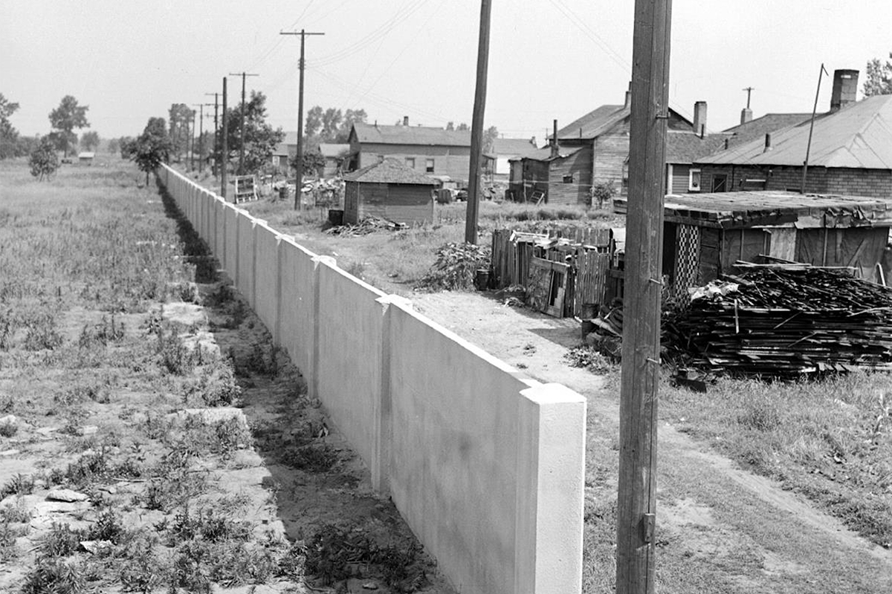
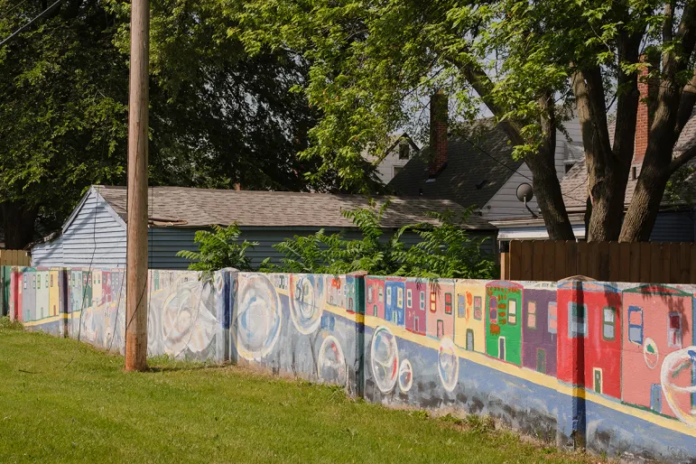

DETROIT — When they started building the wall behind Margaret Watson’s house in northwest Detroit, she knew the reason without having to ask.
As a child in the late 1930s, Watson had seen the new streets laid down like a tic-tac-toe board in the open fields where her father once planted a garden the size of a city block.
She’d roller-skated down those newly paved lanes at speeds that would have been impossible on the dirt roads that ran in front of her house.
She knew the new streets had to be for white families — not Black ones like hers — so she wasn’t particularly surprised when, in the spring of 1941, a 6-foot-high, 4-inch-thick, half-mile-long concrete fortification suddenly appeared in her backyard.
If white people were moving in, she reasoned, they’d need a way to keep her out.
“I don’t remember feeling any way about it except it was the same old, same old,” said Watson, now 93, who still lives in that house and recalled being excluded from certain restaurants and stores growing up.
The wall in Watson’s backyard was built by white real estate developers who struggled to secure financing for their white neighborhood until they cut it off from a Black one. It is one of a number of segregation walls built in the mid-20th century for this purpose and one of a few still standing.
The divider — called the “Birwood Wall,” the “Eight Mile Wall” or the “Wailing Wall” — can’t be blamed for inventing segregation. But the barrier, and the policies that led to its existence, would have far-reaching repercussions for the people, both Black and white, who lived in its shadow.
On the east side, the Black side, some residents were motivated by the wall’s arrival to advocate for change. Others felt penned in by the wall and the racism it represented. While the barricade, which ran through an alley between two residential streets, was not guarded and did not extend across intersections, the towering concrete sent a clear message about who was unwelcome to cross.
On the west side, the white side, some children who moved into the houses that sprouted along the new streets in the 1940s — now in their 70s and 80s — say they never knew the wall was there, just as they didn’t know that the houses their parents bought back then had deed restrictions barring residents who weren’t white. They never talked about race with their parents or friends, they said, or wondered why they attended the mostly white MacDowell Elementary School, which enrolled children from the west side of the wall, rather than the mostly Black Higginbotham School, which enrolled children from the east side.
“Race wasn’t a major issue at the time,” said Stephen Bean, 80, who is white and grew up near the wall. “Everybody just sort of got along.”
Whether people who lived near the wall knew of its existence, they were profoundly shaped by the racist policies and profiteering that built it, according to nearly three dozen interviews with current and former residents of the area and their descendants, conversations with experts and hundreds of pages of land and business records, historical documents and archival materials.
In a six-month investigation, NBC News and BridgeDetroit discovered that one of Detroit’s most prominent families built the wall and developed the adjacent white neighborhood. The reporting also examined the ways this single act of segregation has influenced generations of Detroiters.
The side of the wall these residents called home would later affect the sale price of their houses, the value of their next homes, and, eventually, the wealth they might inherit from their parents. Their experience in elementary school would determine the classes they took in high school, their decisions about college or the military, and the ease with which they achieved their goals. And throughout their lives, the friendships they made would frame their interactions with classmates and colleagues, with doctors and law enforcement, in social settings and in job interviews.
This is Detroit's Birwood Wall
It slices through the East Mile-Wyoming neighborhood, just below Eight Mile Road, Detroit's storied northern border.
The concrete barrier runs in an alley behind residents' homes.
The east side was originally a Black neighborhood... while the west side was developed for whites only.
Today the wall serves as a reminder of the lasting consequences of racist policies.
Eighty years later, the wall itself, now brightly painted in parts with colorful murals, no longer separates Black from white. The discriminatory policies that made the wall possible have been outlawed. Nearly all of the area’s white residents left for the suburbs decades ago, crossing nearby Eight Mile Road, which separates Detroit from its suburbs and has long symbolized the region’s racial divide. As white families left, they made space for a Black neighborhood of affordable homes to flourish.
“This community was such a vibrant community,” said Teresa Moon, 68, who moved to a house just east of the wall in 1959. “We were so well connected, and we had so much love.”
But the divisions set down in concrete on a spring day in 1941 are an enduring reminder of the reasons this country remains so starkly divided — why a nation that’s more racially and ethnically diverse than almost any other is packed, from coast to coast, with segregated neighborhoods. Parents still send their children to schools that are deeply and persistently divided by race and funded inequitably. Many still face drastically different odds of financial success. Many still view current events — elections, the pandemic, the drumbeat of viral videos that reflect fear and violence and white supremacy in America — through lenses that are blurred or focused by their race.
A 'Real Home'
The story of the Birwood Wall begins at a time when Detroit surged with ambition and wealth, when hundreds of thousands of people were flooding into the city, and when the prospect of decent jobs on the assembly line made it possible for working people to dream.
For John and Elizabeth Crews, who arrived in 1918, that dream meant a home — a “REAL HOME,” the Crewses’ daughter, Burniece Avery, later wrote in capital letters in a memoir, a home with glass windows, “beautiful curtains, nice furniture.”
That home hadn’t been possible in the drafty hut outside of York, Alabama, where John Crews made so little as a sharecropper that he wasn't able to buy shoes for his child.